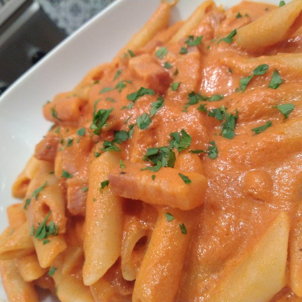

Penne alla vodka

Description:
Penne alla vodka is a delicious dish.
It's not sure where it's from.
It's usually made with cream, salmon, tomato and of course pasta.
Ingredients for 2 persons:
- 160g of pasta;
- 200ml of cream;
- 100g of salmon;
- pepper and parmesan to taste.
Steps:
- Put water and some salt in a pan and wait until the water boils;
- meanwhile, cook the salmon in another pan;
- add cream, parmesan and pepper to the salmon;
- once the water boils, throw in the pasta and wait until it's cooked;
- when the pasta is ready, drain it and put in the same pan where the cream is;
- mix pasta, cream and salmon until it sticks together;
- enjoy your penne alla vodka! Buon appetito!
Return to the list of recipes